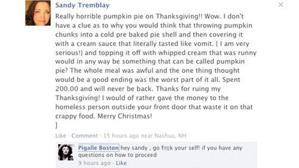
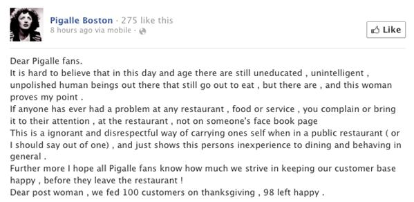
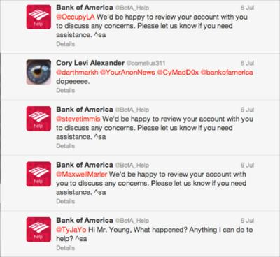

Social Media is the place where you connect and interact with your existing customers, fans and potential clients. If you want to use Social Media as a marketing strategy for your business, you need to prepare to interact with your followers not just broadcast your message and ignore the “social” part.
Responding to comments on social media can be a real pain sometimes. Especially if you have to deal with negative comments. Let’s face it, you can’t avoid negative comments on social media as much as you would like to. If you only have positive ones then kudos to you, though everybody should expect a negative one from time to time.
We’re not always in a Zen mood, so responding to such comments will take extra effort and patience. So, how to approach this situation productively? What to do when the negative comments start popping up on your page?
Here is a list of tips to help you get this marketing practice to the next level:
1. Never ignore your comments …
if you want to take social media seriously. No matter the social platform you use, you need to interact with other people. It is unprofessional to ignore the comments of your followers (who can be clients or prospects). Not to mention that it fails the purpose of a social marketing campaign, which is to reach and engage with more potential customers and establish trust and loyalty through human interactions.
Unfortunately, this happens a lot in the online space. It’s like completely ignoring a customer contacting your customer support team by email or phone, hoping to solve an issue with your product.
What the brands that have this approach fail to realize is that Social Media is Customer Service. Some customers get really frustrated when support is slow or when their feedback is ignored especially while the promotional material is being pushed at them.
The point of social media is to create “virtual relationships” between customers and brands, to humanize the brands and have friendlier and less formal interactions with their clients. But friendlier doesn’t mean ignoring the negative comments. In extreme cases, this can even determine customers to switch companies.
What’s even more frustrating for the customers is deleting their comments. This will make them really angry and not only that they will choose a competitive product, but they will spread the word to their friends. This is how bad reputation is born.
So in case you missed the first point that I made so far, Never, Ever avoid or delete bad comments!
2. Always stay positive!
Even if you feel that the comment is unfair and uncalled for, don’t leave an angry reply. This will make things worse and you will lose your credibility in front of other people that might see your comments. Stay classy! And don’t forget that social media can go viral really quickly.
Just so you know how bad this can go, here are a few examples of awful mistakes on social media that went viral:
First one is the short response made to an angry customer

And after a while, possibly thinking that they didn’t take the best approach at first came and even more uninspired response:

So what do you think, was this a positive way to respond? What could you have done better?
3. Responding with a standard and insincere comment…
is not a good practice either. Or even worse, having an automatic standard e-mail response for each customer! This looks like your social account is left in the hands of a team of robots. See the automatic replies from Bank of America to understand what we mean:

4. Sometimes you need to look at the context…
in which a comment was made to avoid misinterpretation. Don’t just jump right in the middle of the conversation. On social media and generally in all online dealings things can be misinterpreted quickly, unlike when talking with someone face to face when you have mimics and gestures to help you understand what the other person is trying to transmit.
Also, many people when asking for help online, mistakenly believe that you know exactly what they’re talking about and may send messages like “it doesn’t work”. While this may make perfect sense to them when they write it, you do need to ask them to be as clear as possible. Try asking some clarifying questions first, so you perfectly understand the issue before a definitive response from you is made.
5. What to do when you are dealing with trolls and online bullies?
Don’t worry, you will have your fair share of trolls on social media. They’re everywhere! But you will notice that most of the time they don’t have experience with the product or the service they troll about.
They’re just repeating what they heard before or just trying to be mean. So you should start by asking if they have experience with the issue that’s being discussed. This should make them pause or stop completely.
If this doesn’t help, you should just agree to disagree. There is no point in trying to convince someone that doesn’t want to be convinced, so why continue the argument. It’s a lost cause and it’s not worth the effort.
When you see an argument started between commenters that degenerates to unrelated topics, you should get involved and try to put an end to it, even if it might bring some attention to you, it’s not the kind of attention you should be looking for.
6. If everything else fails…
don’t be afraid to delete, block or report spam, offensive comments or trolling that gets out of hand. As a rule of thumbs, you should delete and report inappropriate comments such as racism, offensive remarks or spam, without hesitation.
I know that my first point was never, ever delete any comment, but I was speaking about regular customers, even though they were angry or confused not about people wasting your time.
Final words of wisdom on how to deal with negative comments!
When you respond to comments remember that you are writing for everyone who will read it, not just the commenter. Your reaction will help people decide if they trust you and your company and if they want to deal with you in the future.
So, how to manage the negative comments or reviews?
- If it was indeed your fault start with an apology and then offer a real solution. Mistakes happen to the best of us. Customers will get upset once in a while and they will complain. You have the chance to make things right by listening and offering real solutions. This shows that you care about your clients and they will stay loyal even when mistakes happen.
- If it wasn’t your fault but you can do anything to help, do that, explain everything in detail and again offer a solution for the customer, he will definitely be grateful for your help especially when he realizes it wasn’t your fault to begin with
- If it wasn’t your fault and you can’t do anything about it explain that in detail too, try to be impartial and don’t sound patronizing or make fun of the client.
How about you, ever had any problems with negative feedback? What do you think are the best ways to deal with negative comments and reviews? Let’s hear it in the comments, the best way to learn is from experience even if it’s somebody else’s!
Jenny says
Interesting ideas, had to deal with something like this at one time and it really didn’t go well :D. Will try to be more chill next time.
Terry says
I just hate negative comments, never was good at dealing with them and just tried to ignore them, thanks for this will try to apply some of what you said here 🙂
David says
I agree with you, we have to stay positive no matter what comment we get. If some unsatisfied customer is rude, the best method is to be as kind as possible and help them to solve their issue, if they allow it and continue conversation.
Also, being honest is second important rule when dealing with these kind of comments and accepting if we made any kind of mistake.
Radha says
Good or bad, all comments are welcome. When dealing with nasty ones, I always think of a funny yet witty clapback..then comes the dilemma ‘to post or not to post’ 😀